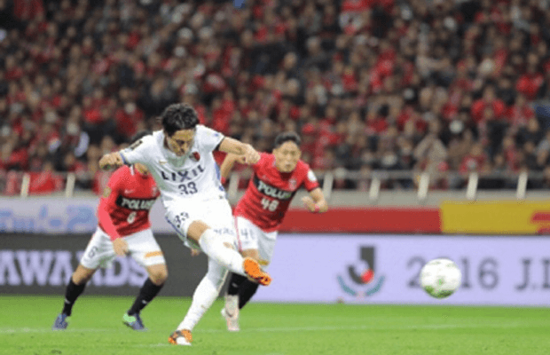
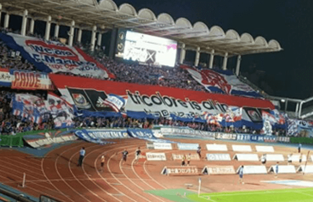
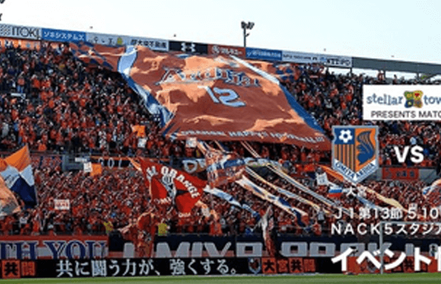
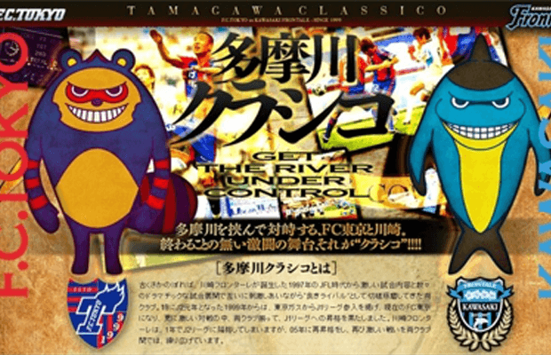
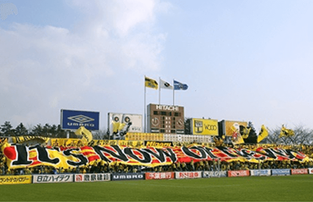
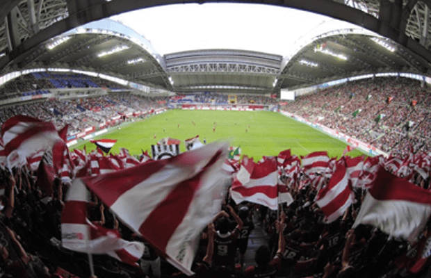

关东德比
鹿岛鹿角 VS 浦和红钻
J联赛最吸引人的德比之一，两队每年都是联赛冠军最有力的争夺者，都是国脚大户；上赛季两队一直拼到联赛决赛阶段，最终鹿岛鹿角凭借客场进球优势击败浦和红钻拿下2016赛季J1联赛总冠军。关东德比每次比赛无论教练，球员，球迷都是多面斗法，虽然比赛相对没有神奈川那样激烈，但是两队也为球迷奉献了两次顶级水准的较量，观赏性十足。

（图）总决赛次回合鹿岛鹿角凭借金崎梦生79分钟点球将比分反超，最终神奇翻盘夺冠。
鹿岛鹿角
鹿岛鹿角本赛季除了中后卫黄锡浩，中轴司令塔柴崎岳和锋线法布里西奥等球员外，没有其他主力球员离队；引援方面球队引进了被称作日职联最好的外援之一的里奥席尔瓦（32场5球2助攻），另外上赛季助攻王（15次）佩德罗和巴西U22国脚莱昂德罗的加盟也着实提高了球队锋线的实力。
鹿岛鹿角转入:门将：权纯泰（全北现代），后卫:三竿雄斗(湘南比马)，中场:里奥席尔瓦(新潟天鹅)、，前锋:佩德罗(神户胜利船)、莱昂德罗(帕尔梅拉斯，巴甲)
转出：门将:节引政敏（清水鼓动，租借期满），后卫:黄锡浩（天津泰达）、，中场:柴崎岳（特内里费，西乙），前锋:高崎宽之（松元山雅）
浦和红钻
浦和红钻拥有豪华阵容，本赛季补强工作依然着重中前场，从新泻天鹅引进的进攻球员拉斐尔达席尔瓦将稳坐锋线位置，另外像日本国奥队成员奥奈武阿道、矢岛慎也以及田村友等引援也都是主力位置的有力竞争者，新赛季阵容补充的更加厚实，主帅佩德洛维奇也表示新赛季球队要拿回属于自己的冠军奖盘。
浦和红钻转入：门将:榎本哲也(横滨水手)，后卫:桥本和（神户胜利船），中场:矢岛慎也(冈山绿雉，外借归队)，前锋:奥奈武阿道(千叶市原)、拉斐尔达席尔瓦(新泻天鹅，23场11球3助攻)
转出:门将:大谷幸辉（新泻天鹅），后卫:布兰科•伊利奇（卢布尔雅那奥林匹亚，斯洛文尼亚），前锋:石原直树（仙台七夕，租借）
神奈川德比
横滨水手 VS 川崎前锋
两队都处于神奈川县，近几个赛季排名相近，2013赛季以来川崎都力压横滨水手，两队球员很多球员都是大学、高中同学，每次比赛非常激烈，上赛季两队德比战首回合较量川崎在客场以2比0拿下横滨，次回合横滨客场2比3惜败，整场比赛双方动作也比较大，火药味十足，且自13年以来，两队交锋从来没有出现平局。

（图）上赛季次回合德比较量，伤停补时连入三球，川崎主场惊险绝杀，德比气氛也燃至最高点。
横滨水手
横滨水手赛季初最受打击的莫过于中场大将中村俊辅转会至磐田喜悦，引援方面22岁马其顿国脚、曾效力巴萨B队的巴本斯基和同样22岁的澳大利亚国脚德格内克的加盟相信会给球队带来变化，同时上赛季塞尔维亚超最佳球员的比埃拉的引进相信可以更好的为球队攻城拔寨；另外球队与后防老将中泽佑二完成续约，38岁高龄的老将上赛季依旧全勤出战并贡献3球，并入选上赛季J联赛最佳阵容。
横滨水手转入：门将：杉本大地（京都不死鸟），后卫：山中亮辅（柏太阳神），中场：巴本斯基（贝尔格莱德红星），前锋：比埃拉（贝尔格莱德红星，10场7球，200万欧元）
转出：门将：榎本哲（浦和红钻）、铃木椋大（大阪钢巴），中场：藤本淳吾（大阪钢巴）、中村俊辅（磐田喜悦，19场4球5助攻），前锋：法比奥·阿吉亚尔（大阪钢巴）
琦玉德比
大宫松鼠 VS 浦和红钻
大宫与浦和之间的德比是日本最火爆之一，与其他同县德比不同，大宫与浦和是在同一座城市，德比气息浓厚；浦和红钻是J联赛强队，大宫松鼠近几年发挥时上时下。在大宫球迷的眼中，埼玉县足球的代表是他们，而浦和的突然崛起，让大宫球迷一下接受不了，所以两队交手往往异常火爆，虽然两队实力来说，大宫稍逊一筹，但是往往在面对浦和的比赛中，大宫的表现的很有韧性，也多次上演进球大战。上赛季的琦玉县德比浦和客场1比0战胜大宫，但是到了主场却2比2被大宫逼平，大宫在落后情况下，扳平再落后，最后再次扳平，大宫表现的韧性十足，给浦和制造了非常大的麻烦。

（图）德比战无弱队，大宫松鼠实力稍弱不过主场依然气势如虹，激情燃爆全场。
大宫松鼠
大宫松鼠上赛季取得第5的队史最好成绩，不过新赛季随着中场大将泉泽仁和家长昭博的转会使得球队不得不面对J联赛竞争激烈的残酷现实，新赛季目标仅为：积分超过50分、排名前10。引援方面中场茨田阳生和大前元纪的加盟能否填补泉泽仁和家长昭博留下的空档还未可知，球队主帅涉谷洋树对此表示要脚踏实地点。
大宫松鼠转入：中场：长谷川（湘南比马）、茨田阳生（柏太阳神），前锋：大前元纪（清水心跳，29场19球7助攻）
转出：中场：泉泽仁（大阪钢巴，30场3球1助攻）、家长昭博（川崎前锋，11球5助攻）
静冈德比
磐田喜悦 VS 清水心跳
两队所在城市同属静冈县，也都是日本联赛的老牌球队，两支球队此前均未降级，不过近些年来两只球队逐渐没落，先是2013赛季磐田不幸降级，清水到2015赛季也难逃降级命运，同赛季磐田则升级到J1联赛，两队错过交锋机会, 两队上次德比交锋还要追溯到13赛季。清水与磐田的德比大战一向看重主场优势，清水近12次主场面对磐田8胜4平保持不败，静冈县的主场气氛非常重要；实力方面清水较磐田稍占优势，近2次客场交锋取得全胜，结束此前作客5连败。2016赛季清水心跳获得J2联赛亚军得以重返顶级联赛，清水上赛季J2联赛火力最强，队内头号射手朝鲜“鲁尼”郑大世也以26球荣获J2联赛金靴，目前和球队已经完成续约，时隔一年重返顶级联赛，清水已磨刀霍霍枕戈待战。
 （图）时隔3个赛季静冈德比重新在日职联复活，新赛季德比战值得期待。
（图）时隔3个赛季静冈德比重新在日职联复活，新赛季德比战值得期待。
磐田喜悦
磐田喜悦作为新赛季升班马，各个位置都进行了相应的补强工作，队内头号射手博思罗伊德（22场15球）和帕帕多普洛斯合约到期离队给了新晋锋线杀手川又坚基和后防高桥祥平出战的机会，而新援中最大牌的当属从横滨水手加盟来的中村俊辅，38岁老将上赛季依然为横滨水手出场19次打入4球贡献5次助攻，帮助球队赢得联赛杯和天皇杯冠军，战将老矣然尚能战。
磐田喜悦转入：后卫：高桥祥平（神户胜利船），中场：中村俊辅（横滨水手）、穆萨耶夫（纳萨夫，乌兹别克），前锋：川又坚基（名古屋鲸八，17场5球，100万欧元）
转出：后卫：高木和道（皇家空军，泰超）、石田崚真（金泽萨维根，租借），前锋：森岛康仁（自由转会）、中村佑辉（自由转会）
清水心跳
清水心跳阵中前锋大前元纪、泽田崇以及后卫三浦弦太、石毛秀树等人转会离队，转而引进22岁的中场小将野津田岳人以及24岁小将高木善朗，相信年轻的血液更能带动球队前场的进攻，另外搭配上赛季J2联赛金靴得主郑大世，清水心跳新赛季并不甘心升班一季游，必将会有所突破。
清水心跳转入：门将：六反勇治（仙台七夕），后卫：卡努（春武里），中场：野津田岳人（广岛三箭，租借）
转出：门将:节引政敏（冈山绿雉），后卫：三浦弦太（大阪钢巴），中场：石毛秀树（冈山绿雉），前锋：大前元纪（大宫松鼠，29场18球7助攻）、泽田崇（长崎航海）
多摩川德比
东京FC VS 川崎前锋
J联赛宿敌，因为两市之间都有多摩川河流经过，两队之间的较量被称作多摩川德比。川崎是一只打法华丽，进攻强的球队，东京FC又是一直盛产国脚的球队，两队的碰撞更是充满激情，场面绝对让人兴奋。上赛季的多摩川德比以川崎前锋双杀对手告终，首次交锋更是客场4比2战胜东京，老将大久保嘉人用一记漂亮的进球宣告世人他还是那个恐怖的锋线杀手。东京FC上赛季则由于人员流失，发挥的并不好，但是在面对德比对手时也没有提早缴枪，血性十足，次回合东京FC坚守了80分钟才被川崎头号射手小林悠破门，最终客场以0比1落败。

（图）东京德隆怕狸猫对阵伏龙太海豚，德比战下连吉祥物也面露杀机。
东京FC
东京FC本赛季引进几位新援中，最引人注目的当属来自川崎前锋此前连续3个赛季拿到J1金靴奖并以15个进球进入上赛季J1联赛最佳阵容的大久保嘉人以及从荷甲维特斯归队的太田宏介，加上日本前国脚高萩洋次郎的回归，球队实力得到一定提升，而球队本赛季的目标则是剑指亚冠正赛资格。
东京FC转入：前锋：永井谦佑（名古屋鲸八）、大久保嘉人（川崎前锋）、太田宏介（维特斯，130万欧元）,中场：高萩洋次郎（首尔FC，32场1球），后卫：驹野友一（福冈黄蜂），门将：林彰洋（鸟栖沙岩）
转出：前锋：平山相太（仙台七夕），中场：高桥秀人（神户胜利船）、水沼宏太（大阪樱花），门将：围谦太朗（大阪樱花）
川崎前锋
川崎前锋新赛季主要离队的核心球员只有射手大久保嘉人，球队也重点引入有留洋经验的大宫松鼠射手家长昭博(11球5助攻)作为点对点的补充，此外阵中原有的四位外援郑成龙、杜杜、尼图、埃尔西尼奥在全部获得续约的前提下，更在巴甲租借中场球员拉尼尔，加上舞行龙詹姆士和阿部浩之的加盟使得球队阵容深度比起上个赛季更厚一些；另外阵中头号射手小林悠（32场15球10助攻）和老将中村宪刚（上赛季J联赛MVP）状态火热，川崎前锋为新赛季的多线作战做好了充足准备。
川崎前锋转入：门将:威廉波普(东京绿茵，租借)，后卫:舞行龙詹姆士(新潟天鹅，22场1球)，中场:阿部浩之(大阪钢巴，24场3球3助攻，100万欧元)、家长昭博(大宫松鼠，26场11球5助攻)、拉尼尔(庞特普雷塔，租借，100万欧元身价)
转出:后卫:小宫山尊信（横滨FC），中场:中野嘉大（仙台七夕）、原川力（鸟栖沙岩），前锋:大久保嘉人（东京FC）
富士山德比
清水心跳 VS 甲府风林
甲府风林所在的山梨县及队名“风林火山”，都与日本战国名将武田信玄有直接联系。遗憾的是，他们没有武田家这样富庶，地处内陆市场较小，是J联赛财政最困难的几支球队之一。而德比战中并不是所有的都是冲突、疯狂的，清水与甲府之间的德比战就是众多火爆德比中的一股清流。清水与甲府都位于日本中部地区，两支球队之间的比赛被冠以“富士山德比”的称号，两队之间不仅没有什么利害冲突，清水还是甲府最好的盟友之一，关系一直不错，每次甲府升级之后，都有一些来自清水的球员投奔，包括清水的传奇老将伊东辉悦。
（图）2015赛季日职联最后一轮富士山德比、甲府主场2比2清水后，清水历史首次降班到J2联赛。
甲府风林
甲府风林新赛季主力锋线球员稻垣祥转会离队，其他离队球员并不算主力球员；引援方面从米内罗美洲引进的利马令人印象深刻，以及上赛季出场23次为仙台七夕打入6球的威尔逊，对于连年需要为保级而战的球队来说，新赛季目标是在保级基础上争取有所作为。
甲府风林转入：后卫：利马（米内罗美洲），中场：小椋祥平（大阪钢巴），前锋：威尔逊（仙台七夕）、加布里埃尔（圣保罗）
转出：后卫：渡边将基（横滨FC）、福田健介（长崎航海），中场：稻垣祥（广岛三箭，33场6球）
东京德比
柏太阳神 VS 东京FC
柏太阳神虽然位于千叶县，但是地理上距离东京最近，而柏太阳神自2010赛季以来在老帅巴普蒂斯塔的带领下连夺日乙，日职，日联，天皇杯，超级杯冠军，面对这样的小弟，东京FC老大地位受到实质性的威胁，两队对决也成了东京地区血腥德比。不过近几个赛季两队表现差强人意，继2011赛季东京FC和柏太阳神分别夺取J2和J1冠军后，此后几个赛季两队都混迹于联赛中上游，基本与冠军无缘。作为首都球队，FC东京一直想更进一步，战绩却始终徘徊在中游、中上游之间。球队换帅频率很高，从大熊清、波波维奇、菲卡登蒂到去年的城福浩、篠田善之，没有明确的思路。

（图）柏太阳神上赛季主客场双杀零封东京FC，首都老大地位已不保。
柏太阳神
柏太阳神赛季初阵中两名年轻球员茨田阳生和山中亮辅就转会出走，对球队实力造成一定损失，不过在引援上球队也是各条战线补强，从川崎前锋引进后防大将爱德华多，锋线引进的拉蒙洛佩斯上赛季在仙台七夕表现出色，另外加上来自丹超的尹锡荣，新赛季柏太阳神将延续“从柏走向世界”这一口号，球队目标将会是争夺亚冠资格。
柏太阳神转入：后卫：爱德华多（川崎前锋），中场：木村裕（长崎航海），前锋：拉蒙洛佩斯（仙台七夕，32场10球6助攻）、尹锡荣（布隆德比，丹超）
转出：后卫：山中亮辅（横滨水手），中场：茨田阳生（大宫松鼠），前锋：奥利维拉（达伽马，巴乙，租借）、田中顺也（21场4球2助攻，租借期满）
阪神德比
大阪钢巴 VS 神户胜利船 VS 大阪樱花
阪神德比是指同属关西地区的大阪钢巴、大阪樱花与神户胜利船三支球队之间的地区德比战。神户胜利船在2013赛季升入J1联赛，沉寂了2个赛季后，上赛季迎来在柏太阳神功勋卓著老帅巴普蒂斯塔后，球队发挥出色总榜排名次席，两回合德比较量双杀了大阪钢巴，体现出不俗的战斗力。出色的带队成绩也让俱乐部毅然决定留下巴普蒂斯塔。大阪樱花上赛季在J2升级附加赛中击败冈山绿雉，自2014赛季降级J2联赛后时隔2年重返J1联赛，阪神德比再次成为三支球队的较量。

（图）神户胜利船主场与大阪兄弟的近4场较量中取得了2胜2负，近2个主场交锋全胜，主场气势如虹。
神户胜利船
神户胜利船新赛季与老帅巴普蒂斯塔完成续约，寄予希望新赛季能够再有更大进步；引援方面传说的波尔蒂并没有如愿登陆J联赛，而球队主力前锋佩德罗（上赛季各项赛事18球18助攻）转会鹿岛鹿角让球队锋线实力受损，而旅欧国脚田中顺也的回归相信可以很好的代替佩德罗的位置；另外防线上球队引进日职联第一空霸之称的渡部博文，让原本已经异常稳固的球队后防线更令人放心。
神户胜利船转入：后卫：桥本和（浦和红钻），中场：高桥秀人（东京FC），前锋：田中顺也（里斯本竞技,250万欧元）、大森晃太郎（大阪钢巴，25场3球3助攻）
转出：门将：山本海人（千叶市原），后卫：高桥祥平（磐田喜悦），前锋：佩德罗（鹿岛鹿角）
大阪钢巴
大阪钢巴本赛季引援着重在防守端，引进在横滨水手效力四个赛季的巴西外援阿吉亚尔，其拥有出色的防守能力和身体素质，相信会有效的巩固球队防线；其他方面基本为点对点补充，前场引进的井出遥也和泉泽仁填补了大森晃太郎和阿部浩之出走留下的空档。
大阪钢巴转入：门将:铃木椋大(东京绿茵)，后卫:阿吉亚尔(横滨水手)、三浦弦太(清水心跳)，中场:井出遥也(千叶市原)、泉泽仁(大宫松鼠)，前锋:阿德米尔森（圣保罗*巴甲）
转出：后卫:岩下敬辅（福冈黄蜂），场:阿部浩之（川崎前锋）、大森晃太郎（神户胜利船）、小椋祥平（甲府风林）
大阪樱花
大阪樱花在2017赛季开始前请来前鸟栖主帅尹晶焕，试图改革，并斥资6亿日元买来日本国家队核心清武弘嗣，加上水沼宏太等锋线球员的加入，另外而针对孱弱的后防线，球队从K联赛引进外援琼吉奇坐镇防线，球队实力增强不少。
大阪樱花转入：门将：围谦太朗（东京FC），后卫：琼吉奇（仁川联合），中场：清武弘嗣（塞维利亚）、水沼宏太（东京FC）、阿卜杜拉希米（洛克伦，比甲）
转出：门将：武田博行（东京绿茵），中场：扇原贵宏（名古屋鲸八），前锋：玉田圭司（名古屋鲸八）、布鲁诺（长春亚泰）